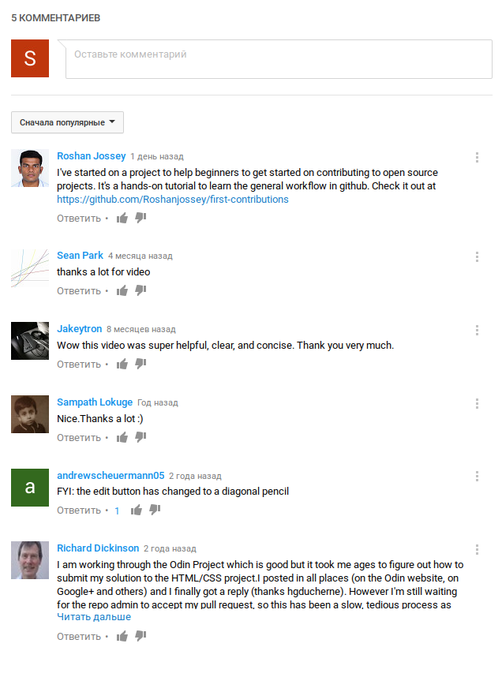
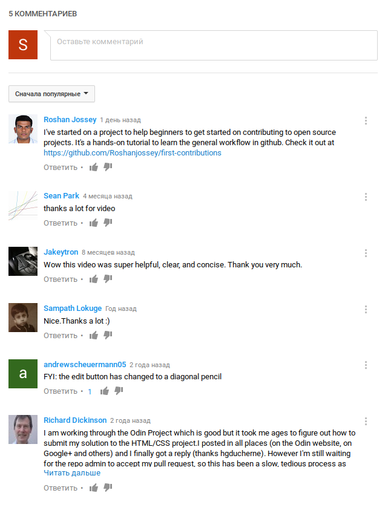

Contributing to Open Source Part I: The Easy Way
![]()
Add to list
Опубликовано: 27 февр. 2014 г.
How do you contribute to open source? In this video, I'll describe the easiest way to make a simple contribution to an open source project -- without using the command line, a text editor, "forking a repo"
Comments

